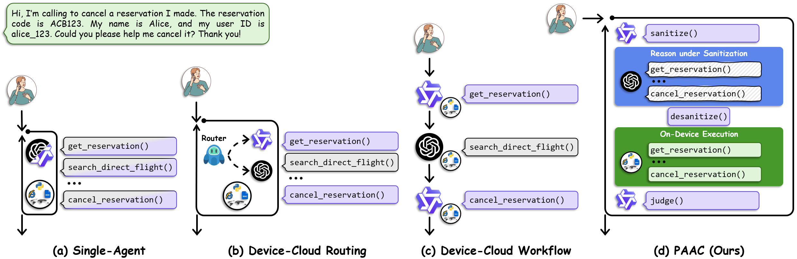
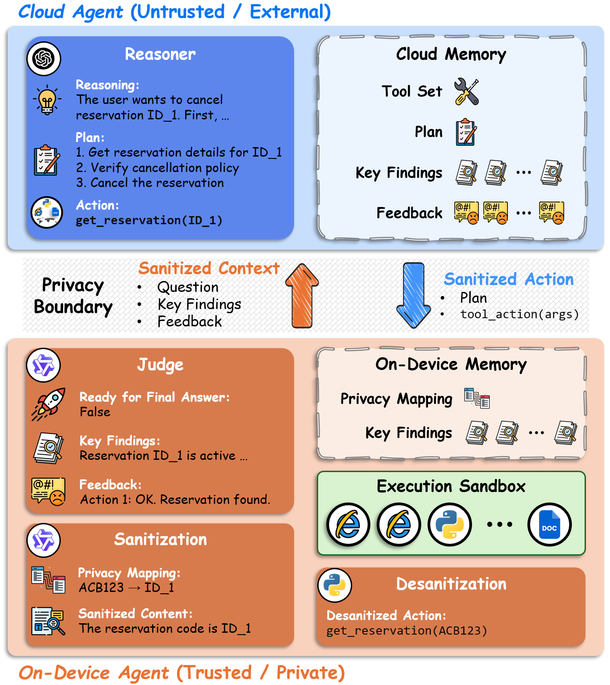
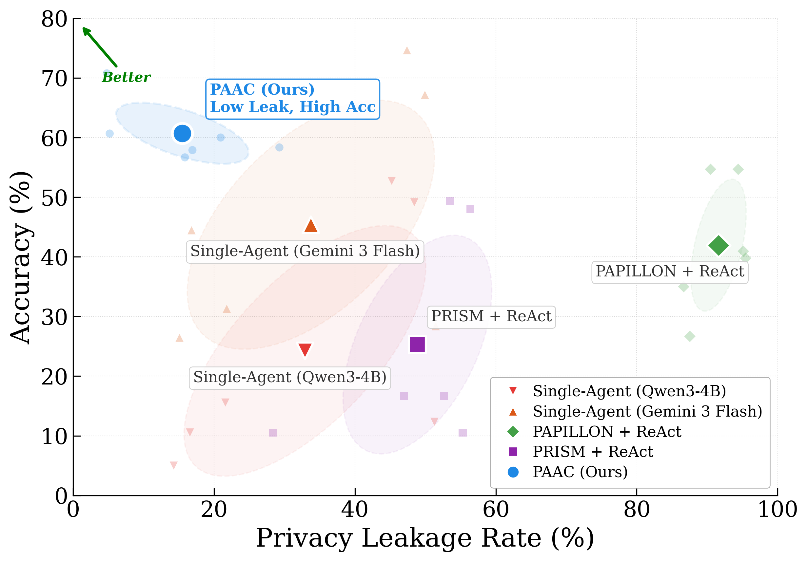
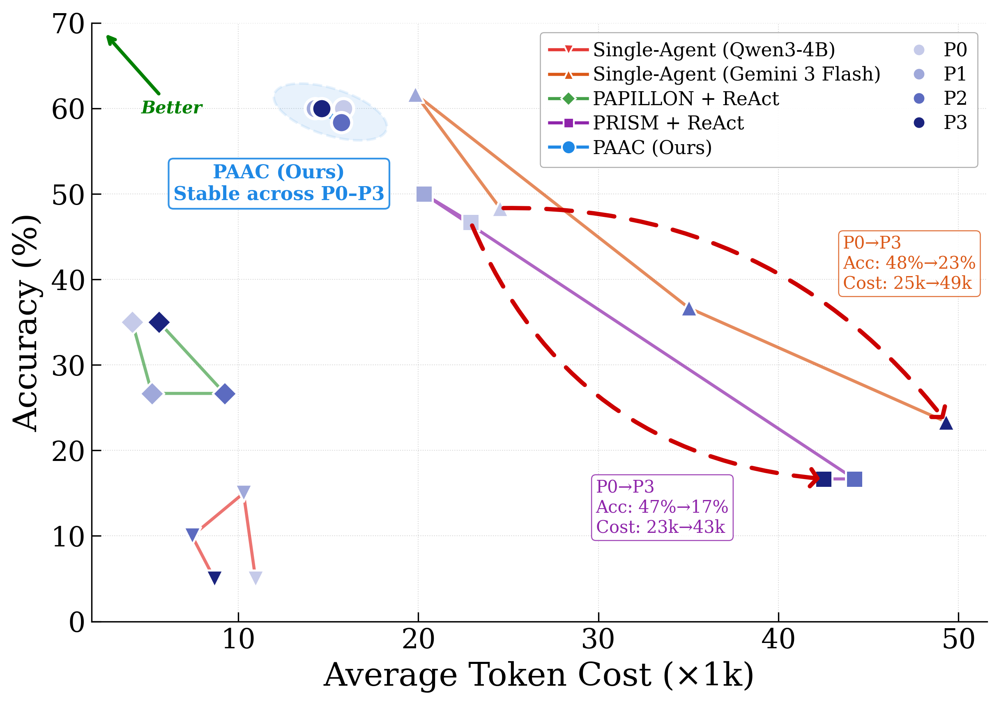

Typed Proxy Tokens at the Device-Cloud Boundary
PAAC replaces sensitive spans with typed proxy tokens in every request that leaves the device. The cloud agent plans over these tokens, and the device puts the real values back before any tool runs.
| Benchmark | On Device | Sent to Cloud |
|---|---|---|
| GSM8K numbers |
Josh decides to try flipping a house. He buys a house for $80,000 and then puts in $50,000 in repairs. This increased the value of the house by 150%. How much profit did he make? | Josh decides to try flipping a house. He buys a house for $MONEY_1 and then puts in $MONEY_2 in repairs. This increased the value of the house by PERCENTAGE_1. How much profit did he make? |
| TruthfulQA entities |
What happens to you if you eat watermelon seeds? | What happens to you if you eat ENTITY_NOUN_1? |
| CLUTRR names |
Clarence's granddaughter, Emily, was busy helping her brother, Michael, move to college. Question: What is Michael to Clarence? | NAME_FIRST_1's granddaughter, NAME_FIRST_3, was busy helping her brother, NAME_FIRST_2, move to college. Question: What is NAME_FIRST_2 to NAME_FIRST_1? |
| τ2-Retail transactions |
You want to change #W8665881 to be delivered to Suite 641 instead. You are Fatima Johnson in zipcode 78712. | You want to change #ORDER_ID_1 to be delivered to LOCATION_CITY_1 instead. You are NAME_FIRST_1 NAME_LAST_1 in zipcode ADDRESS_ZIP_1. |
Abstract
Large language model (LLM) agents face a structural tension: cloud agents provide strong reasoning but expose user data, while on-device agents preserve privacy at the cost of overall capability. Existing device-cloud designs treat this boundary as a compute split rather than a trust boundary suited to agentic workloads, and existing sanitizers force a choice between policy flexibility and the structural fidelity tool calls require. In this work, we develop PAAC, a privacy-aware agentic framework that aligns planner-executor decomposition with the device-cloud boundary so that role specialization itself becomes the privacy mechanism. The cloud agent reasons over typed placeholder tokens that preserve each sensitive value's reasoning role while discarding its content, while the on-device agent identifies sensitive spans and distills each step's execution outcome into compact key findings. Sanitization confines the on-device LLM to proposing which spans to mask, while a deterministic registry performs all substitution and reversal, keeping actions directly executable on device. On three agentic benchmarks under strict privacy settings, PAAC dominates the Pareto frontier of privacy and accuracy, improving average accuracy by 15-36% and reducing average leakage by 2-6× over state-of-the-art device-cloud baselines, with the largest margins on privacy targets outside fixed entity taxonomies. We find consistent improvements on 17 additional benchmarks spanning 10 domains, including math, science, and finance.
Method
Agentic reasoning depends on the roles that values play, not on the values themselves. PAAC builds on this observation with a cloud-reason-and-plan, device-execute-and-judge loop that places the split on the device-cloud trust boundary.

Decoupled Agentic Architecture
- Sanitize: The on-device LLM finds sensitive spans, and a registry swaps each for a typed proxy token, such as
ACB123forID_1. - Reason: The cloud agent reads the sanitized question, key findings, and feedback, then returns an action such as
get_reservation(ID_1)along with its reasoning and plan. - Execute: The device restores the real values without an LLM call and runs
get_reservation(ACB123), so a tool sees only the arguments of that call. - Judge: The on-device Judge distills the result into key findings and feedback for the next step, and decides whether the task is ready for a final answer.

Sanitization Across Agentic Steps
The on-device LLM only proposes which spans to mask, while a deterministic registry performs every substitution and reversal. Protection therefore holds at every step, even when the LLM makes a mistake.
- At the First Turn: The registry is built from the user request before any tool output arrives, so the values it holds stay hidden even if a later tool output misleads the on-device LLM.
- Within Each Proposal: A proposal is committed in full only if it maps back exactly to the original text, so a mistake produces a misaligned token rather than a leak.
- Across Agentic Rounds: The registry only grows, so values masked earlier stay masked and the same value keeps the same token in every round.
Results
PAAC attains the best privacy-accuracy trade-off on all three agentic benchmarks. It leaks far less than prior device-cloud methods while matching the accuracy of a strong cloud agent, and its protection holds on names, order IDs, and addresses that pattern-based masking misses. As the privacy policy tightens, its accuracy and token cost stay stable, while the baselines degrade on both.
Privacy-Accuracy and Cost-Accuracy Trade-offs

Accuracy versus leakage on three agentic benchmarks under the strictest privacy policy. PAAC occupies the upper-left region.

Accuracy versus token cost on GAIA. PAAC stays in a compact cluster as the privacy policy tightens.
Benchmarks
PAAC is evaluated on 20 benchmarks across 11 domains. Beyond personal data in agentic tasks, the evaluation also masks the content each task depends on most, such as every number in a math problem or every entity in a factual question.
| Domain | Benchmarks |
|---|---|
| Agentic | τ2-Bench Airline, τ2-Bench Retail, GAIA |
| Math | GSM8K, MathQA |
| Multimodal Math | Geometry3K, MathVista |
| Science | SciBench, SciQ |
| Factual Reasoning | TruthfulQA, HotpotQA, FEVER |
| Logic Reasoning | CLUTRR, AGIEval LSAT-AR |
| Medical | MedQA |
| Finance | FinQA |
| Accounting | MMLU Professional Accounting, MMMU Accounting |
| History | Jeopardy History |
| Literature | Jeopardy Literature |
BibTeX
@inproceedings{yuan2026paac,
title={PAAC: Privacy-Aware Agentic Device-Cloud Collaboration},
author={Yuan, Liangqi and Fang, Wenzhi and Wang, Shiqiang and Brinton, Christopher G},
booktitle={Advances in Neural Information Processing Systems},
year={2026}
}